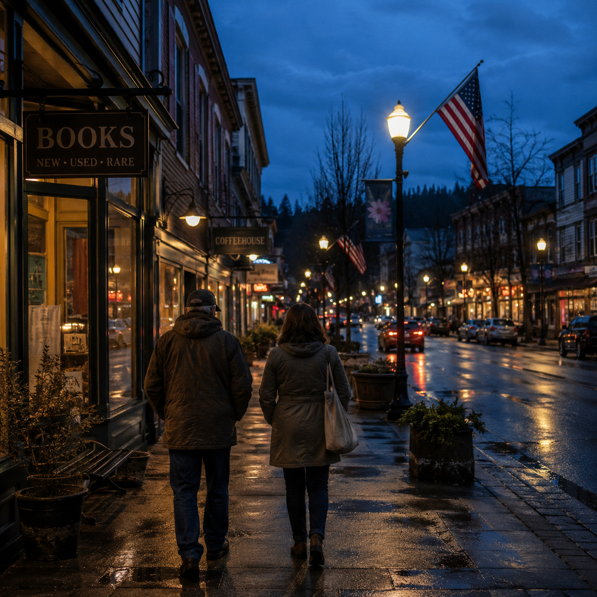

02 / 05
Chapter
//
Everyday Life
Local decisions shape everyday life.
From roads and public safety to schools and community growth, local leaders make decisions that directly affect Northwest Oregon families.
Fig. 01 · The road home
